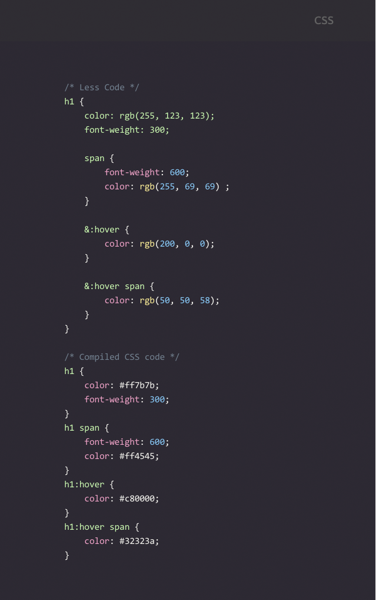

What is LESS?
Less is an open source CSS pre-processor. It looks identical to CSS, but has a ton of extra features that speed development.
It is also a command line CSS pre-processor which turns LESS files into CSS.
Features
List of features:
- Variables
- Imports
- Nesting
- Mixins
- Operations
- Functions
Additionally, it can be run on client side or server side. Valid CSS is valid LESS.
Variables and Imports
Variables allow you to pass values to assigned locations throughout your outputted CSS document.
Imports you should treat exactly like includes. You are passing in that file at compile time.
Nesting
Nesting allows you to cascade your css properties with inheritting children.
Mixins
Mixins allow embedding all the properties of one class into another class.
Here is how you normally add classes to html:
Here is how you can add classes dynamically using less:
Operators & Functions
Operations bring math and calculations to your CSS.
But you are limited to numbers, colors, and variables.
Functions map one-to-one with JavaScript code, allowing manipulation of values.
How to Compile
There are many 3rd party tools that allow you to compile less. I use gulp.

Summary
Less is a dynamic, nested, stylesheet metalanguage with CSS-like syntax that can be compiled into CSS.
It uses Variables, Imports, Nesting, Mixins, Operations, and Functions to make your life easier.